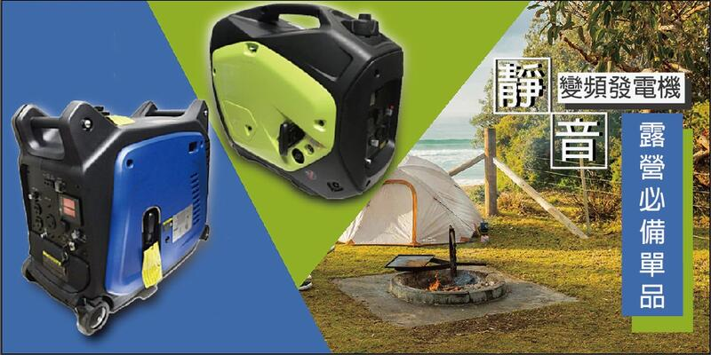

<meta charset="utf-8">
<script src="SRC/js/_header.js"></script>

<main>
	<div class="news-detail inner">		
		<article>
			<h1 class="news-detail-h1">KARCHER 德國凱馳 高壓清洗機 沖洗機 K2 洗車機 清洗機 K 2 非ajp1600</h1>
			<div class="news-detail-date"></i>2020-11-09</div>

			<div class="user_editor">
				<p style="text-align: center;color: #c00;">※以下為圖文編輯器，可由後台新增/編輯，圖片寬度建議 800px 以下。</p>
				<br>
				
				<br>
				<br>
				<p>• 山下海、輕鬆滿足你的用電需求<br>
• 露營、戶外工程活動、停電都適合<br>
• 手拉式發電機<br>
• 超輕量20kg、美觀好攜帶<br>
• 低噪音 低載省油，電壓、電流穩定<br>
• 可充手機，筆記型電腦、平板電腦<br>
• 帶USB雙輸出</p>
			</div>
			<div class="news-tag" >
				<a href="products.html"><i class="fas fa-hashtag"></i>KARCHER</a>
				<a href="products.html"><i class="fas fa-hashtag"></i>德國凱馳</a>
				<a href="products.html"><i class="fas fa-hashtag"></i>沖洗機</a>
				<a href="products.html"><i class="fas fa-hashtag"></i>德國凱馳</a>
				<a href="products.html"><i class="fas fa-hashtag"></i>工具車</a>
			</div>			
		</article>
	</div>
	<div class="btn-box"><a href="news.html" class="back-list-btn">返回列表</a></div>
</main>
<nav class="inner bread"><a href="index.html"><i class="fas fa-home"></i></a><span class="bread-space">/</span>最新消息</nav>
<script src="SRC/js/_footer.js"></script>